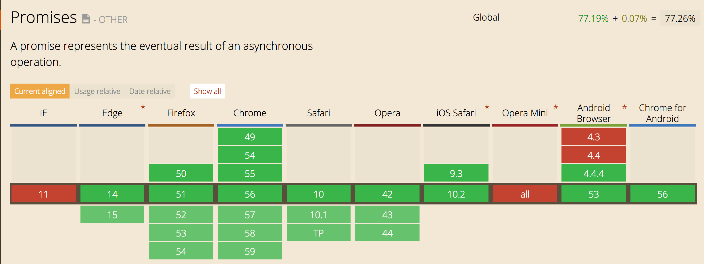

fs.readFile(fichierA, function (err, contenuA) {
if (err) {
return console.log('FAIL: ' + err.message);
}
...
});
$.post('send.php',
{
name: 'Jean-Michel', email: 'jeanmich@caramail.com'
},
function (data) {
...
}
);
var p = new Promise(function (resolve, reject) {
...
if (err) {
reject(err);
} else {
resolve(value);
}
});
Les états d'une promesse:
function get(url) {
return new Promise(function (resolve, reject) {
var req = new XMLHttpRequest();
req.open('GET', url);
req.onload = function () {
if (req.status == 200) {
resolve(req.response);
} else {
reject(new Error(req.statusText));
}
};
req.onerror = function () {
reject(new Error("Network Error"));
};
req.send();
});
}
function readFile(file, options) {
return new Promise(function (resolve, reject) {
fs.readFile(file, options, function (err, data) {
if (err) {
reject(err);
} else {
resolve(data);
}
});
});
}
thenable
new Promise(executor)
Promise.all(iterable)
Promise.reject(reason)
Promise.resolve(value)
Promise.prototype.then(onFulfilled, onRejected)
Promise.prototype.catch(onRejected)
get(url) // Promise.resolve(data)
.then(function (content) {
return content.length;
})
.then(function (len) {
return get(url2);
})
.catch(function (err) {
result.error = err;
res.json(result);
})
.then(function () {
// ...
})
.then(function () {
// ...
})
.then(function () {
return Promise.all([get(url3), get(url4), get(url5)]);
})
.then(function (value) {
// value[0] => content url 3
// value[1] => content url 4
// value[2] => content url 5
})
.catch(function (err) {
result.error = err;
res.json(result);
})
var result = {games: []};
tools.fs
.readdir(system.path.roms)
.then(function (files) {
result.games = files;
})
.then(function () {
return tools.source.list();
})
.then(function (sources) {
result.downloadable = sources.some(function (source) {
return source.hasSystem(system);
});
})
.then(function () {
res.json(result);
})
.catch(function (err) {
result.error = err;
res.json(result);
});
function asyncGreet(name) {
var deferred = $q.defer();
setTimeout(function() {
deferred.notify('About to greet ' + name + '.');
if (okToGreet(name)) {
deferred.resolve('Hello, ' + name + '!');
} else {
deferred.reject('Greeting ' + name + ' is not allowed.');
}
}, 1000);
return deferred.promise;
}
L'object Promise est natif sur node depuis la 0.12
DeprecationWarning: Mongoose: mpromise (mongoose's default promise library) is deprecated, plug in your own promise library instead: http://mongoosejs.com/docs/promises.html
async function doAsyncOp () {
var val = await asynchronousOperation();
val = await asynchronousOperation(val);
return await asynchronousOperation(val);
};